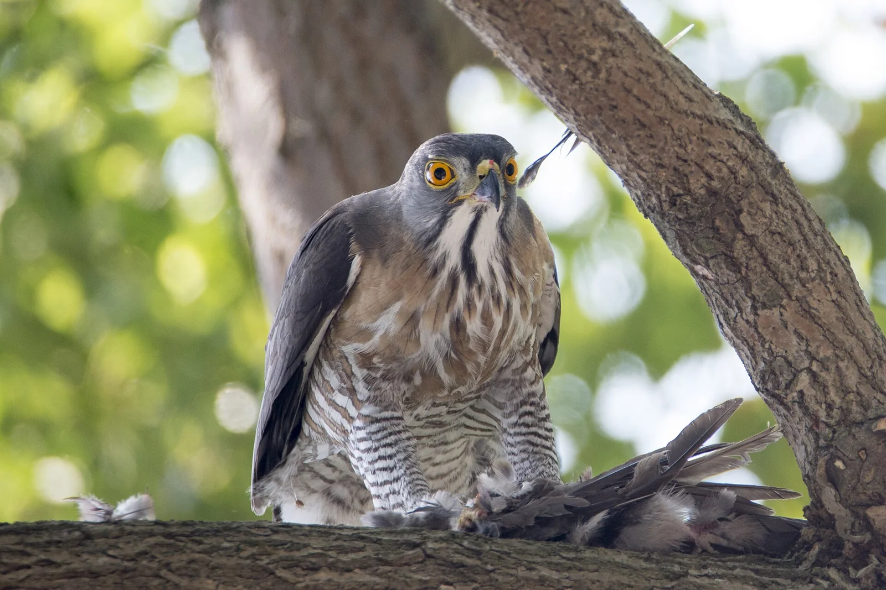

Back to the indexNO. 057 · Hunters of the Sky / Accipitridae · Hawks & Eagles
Crested Goshawk
凤头鹰 · fèng tóu yīng Accipiter trivirgatusA short-winged raptor hidden in the city's trees
It does not care for soaring. It hides in the canopy and takes birds with a sudden short sprint. There is a small crest at the back of the head — usually laid so flat you cannot see it — and the breast carries a series of heavy bars.
Gallery
One scientific illustration for shape and colour blocks, two field photographs for how it looks in real light. Click any image to enlarge.
Identification
- CrestA short crest at the nape, usually inconspicuous, raised slightly when excited or alert.
- UnderpartsThroat white with a dark central stripe; breast and belly white and densely barred with heavy brown — a very typical hawk's chest pattern.
- UpperpartsCrown and back dark brown, scapulars slightly paler; tail fairly long, with four or five bold dark bars.
- FlightTypical Accipiter: wings short and rounded, flapping alternating with gliding, the tail often spread.
Behaviour
A forest raptor, ambushing birds, squirrels and lizards in the canopy. It nests in trees in city parks, and several of the Delta's larger parks hold resident populations. A resident in South China. Secretive, and usually found by voice first.
Voice
A loud 'kew-kew-kew' or 'hi-hi-hi', rising in pitch, frequent in the breeding season.
Where to find it in Zhuhai
- Xiangshan Lake Park tall trees
- Banzhang Hill
- SYSU campus
- Fenghuang Hill forest edges